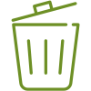

Engenharia brasileira para resultados reais
Brutusmaq: tecnologia robusta para transformar materiais
Equipamentos industriais para trituração, moagem e transporte, desenvolvidos para aumentar a produtividade e fortalecer operações em todo o Brasil.
- Fabricação
nacional - Alta
performance - Assistência
especializada - Projetos
personalizados


Soluções Brutusmaq
Uma linha completa para cada etapa da operação.
Conheça equipamentos novos e usados para reduzir, processar e transportar materiais com segurança e eficiência.
Linha em destaque


Trituradores
Redução de volume para diferentes materiais e demandas industriais.
Conhecer a linha
Moinhos
Moagem eficiente e granulometria adequada para diferentes aplicações.
Conhecer a linha
Esteiras transportadoras
Movimentação contínua para integrar as etapas da sua linha.
Conhecer a linha
Equipamentos usados
Máquinas revisadas, testadas e prontas para novos projetos.
Ver disponíveis
Quem fabrica, entende
Engenharia próxima de quem está no campo.
A Brutusmaq une experiência, desenvolvimento técnico e atendimento próximo para construir equipamentos robustos e soluções alinhadas à realidade de cada operação.
- Fabricação nacionalControle e proximidade em cada etapa do projeto.
- Suporte especializadoOrientação técnica antes e depois da entrega.
- Solução adequadaEquipamentos pensados para material, capacidade e objetivo.
- Relações duradourasCompromisso com desempenho e continuidade.


Transformar para preservar
Do resíduo ao recurso, etapa por etapa.
Nossas soluções apoiam a redução de volume, o reaproveitamento de materiais e processos mais eficientes, fortalecendo a economia circular.
- 01
Receber
Entender composição, volume e condição do material.
- 02
Processar
Reduzir tamanho e preparar o fluxo com tecnologia.
- 03
Separar
Organizar materiais conforme a aplicação planejada.
- 04
Reaproveitar
Devolver valor ao material dentro de um novo ciclo.

Economia circular
Materiais preparados para novas possibilidades.

Redução de volume
Melhor aproveitamento de espaço e movimentação.
Uso consciente
Processos orientados ao aproveitamento de recursos.
Conteúdo técnico
Ver todos os artigos
Conhecimento para decisões industriais mais seguras.


Vamos construir juntos
Seu desafio pode ser o nosso próximo projeto.
Converse com nossa equipe para encontrar a solução adequada ao material, à capacidade e aos objetivos da sua operação.
 Falar no WhatsApp
Falar no WhatsApp